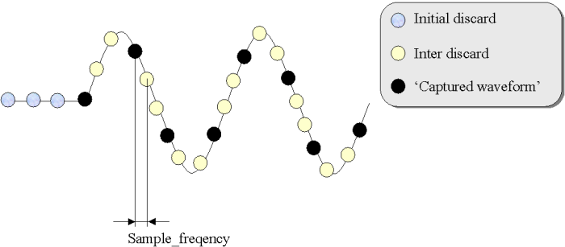

A/D Conversion: Includes Initial and Inter Discard
The A/D converter samples the analog signal and converts it to a digital code. The sample frequency is specified with the entry Sample_Freq in the Sequencer/Timing Generator section of the Analog Setup Tool.
In this section, you can also specify an Inter Discard value. An initial discard value can be determined in the entry Init Discard of a Sequencer Program. The Sequencer Program is set up in the Sequencer Memory Setup of the Analog Setup Tool.

Initial and inter discard are directly performed on the waveform digitizer board. If initial discard is set to 3 the first three data points are discarded. If inter discard is set to 2 after each used sample two samples are discarded. Only the 'black samples' in the figure above are further processed.